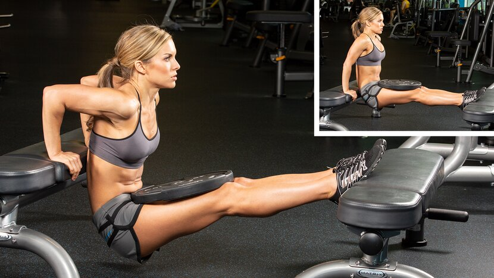
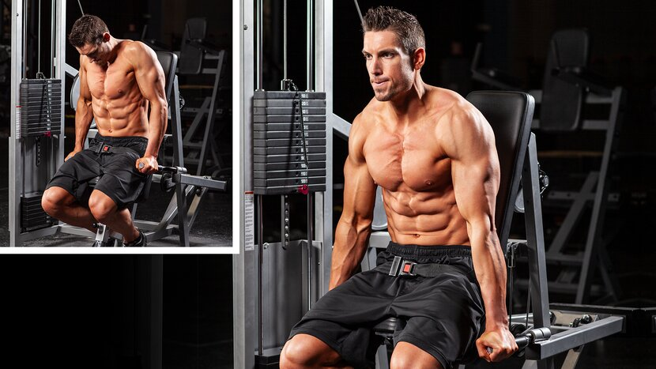
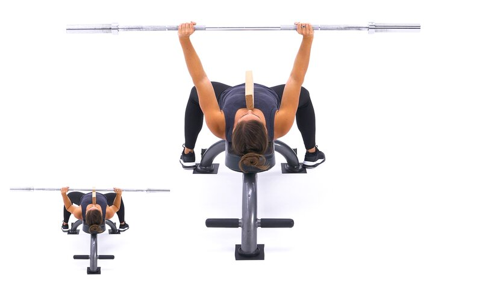
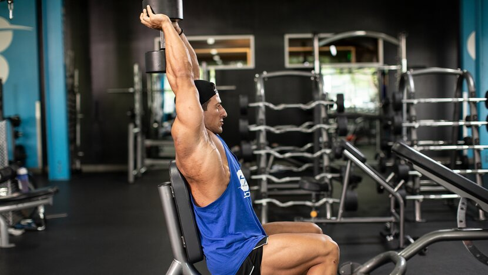
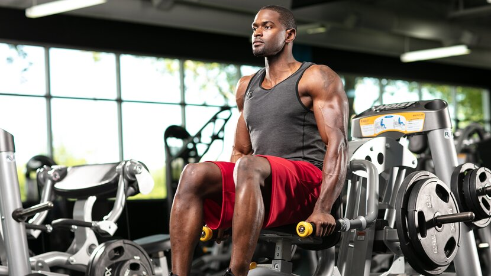

Chest | Back | Shoulders | Biceps | Triceps | Legs | Abs
- Ease of learning and performing
- Total muscle stimulation and intensity
- Popularity among diehard lifters and bodybuilders (This matters!)
- Availability of equipment in commercial gyms
You can also put these moves into action with the three full workouts below. Pair one with the best chest exercises on Monday, then another with biceps on Friday, and you've got a recipe for a tighter T-shirt. Just don't forget to eat and supplement for growth, too!
10 Best Triceps Exercises
Skullcrusher

Why it's on the list: This move—also known as a lying triceps extension—hammers two of the three heads of the triceps: the long and lateral heads. The most popular version is performed on a flat bench with the elbows locked over the head (hence the name), but it's also great on a decline or incline bench. It also works with a wide variety of resistance including not only an EZ-bar, but also dumbbells, cables, or even the Smith machine. The article, "Your Complete Guide to Skullcrushers" gives plenty of options to choose from.
Skullcrusher Variations for Triceps Growth:
- EZ-bar skullcrusher (flat, decline, incline)
- Barbell skullcrusher
- Dumbbell skullcrusher
- Band skullcrusher
- Behind-the-head skullcrusher
In your workout: After warming up your elbows, perform 3-4 sets for 8-12 reps as the first or second exercise in your routine. Don't be a hero and risk your skull! Hit your reps and it'll help you build tris to match your bis.
Close-Grip Bench Press

Why it's on the list: If you've read our 10 Best Exercises guides for chest, back, or shoulders, then you already know that we favor compound (multijoint) exercises. Why? Because they're the best for progressive overload and muscle growth. Even though the bench press is usually a chest exercise, a close-grip press has been shown to hit the triceps harder than wider grips, particularly when performed for heavier sets.
To really torch the back of your arms, use a close grip, but keep your hands around 8-10 inches apart. Tuck your arms in to decrease the amount of stress on your pecs and shoulders while increasing the demand on your triceps.
Close-Grip Bench Press Variations for Triceps Growth:
- Barbell close-grip bench press
- Smith machine close-grip bench press
- JM press
- Close-grip dumbbell bench press
In your workout: Perform this movement first or second in your workout. Do 3-4 sets of 6-10 reps. If you're going heavy, don't hesitate to use wrist wraps for extra support.
Triceps Dip

Why it's on the list: Dips are a proven mass-builder on their own. Their only problem: Lots of people can't do enough reps to get within the ideal muscle-building rep range of 8-12 reps. Either that, or they can do way too many. In the former case, use the assisted dip/pull-up machine or a band. In the latter, add weight with a dip belt or a light dumbbell between your knees or feet.
Dips hit both the chest and triceps, but to favor the tris, keep your body as vertical as possible. Don't lean forward and keep those elbows tight to your sides. Think dips won't work for you? Take a look at any male gymnast; horseshoe triceps come standard issue with all those dips!
Dip Variations for Triceps Growth:
- Triceps dip
- Ring dip
- Russian bar dip
- Banded dip
In your workout: You can start your triceps workout with dips if they're tough for you. Otherwise, use them in the middle of your workout to pump those arms full of blood. Shoot for 3-4 sets of 8-12 reps.
Bench Dip

Why it's on the list: Another dip? Yep. EMG evidence suggests that there's substantial triceps activation during a bench dip. How can you make this classic calisthenics move even better? By bumping up the load with added weight!
The best and safest way to load up is to have a partner place weights across your lap. Intensity boosters like dropsets are easy to do: just remove a plate to extend your set.
Bench Dip Variations for Triceps Growth:
- Bench dip
- Weighted bench dip
- Feet-elevated bench dip
In your workout: Put this in the middle or at the end of your workout, shooting for 3 sets of 8-12 reps. If you are feeling super fatigued, this may not be the best exercise, since your shoulders could end up in a compromised position by rounding forward.
Triceps Machine Dip

Why it's on the list: This compound exercise makes it especially easy to pick and change weights for different rep ranges. This makes it easy to do forced reps, dropsets, or even rest-pause sets to boost your intensity.
Pro tip: Many trainees mess up here by failing to go to full triceps extension and stopping short of fully bending their elbows. Your triceps are elbow extenders, so perform the full range of motion.
Triceps Machine Dip Variations for Triceps Growth:
In your workout: Do this early or in the middle of your workout for 3-4 sets of 6-10 reps, and you'll be convinced this is one of the best arm muscle-building machines out there. Alternately, up the reps to double digits as an upper-arm burnout.
Board Press

Why it's on the list: Take a look at the bench press and you'll notice that the last two-thirds of the movement is mostly elbow extension—in other words, triceps. This is one reason why super strong pressers prioritize triceps training and love the board press to do it.
The board press is a partial-rep version of the bench press where you place 2x4s on your chest to preferentially train the lockout. Don't have boards? An easier gym hack may be simply to move a bench inside the rack and set the pins a few inches off your chest.
Board Press Variations for Triceps Growth
- Board press
- Pin press
- Floor press
In your workout: Hit this early in your triceps routine and go heavy! Shoot for the low end of the hypertrophy rep range at around 4 sets of 8 reps. If you're a big presser, wear your elbow sleeves to stay strong and in the groove.
Dumbbell Overhead Triceps Extension

Why it's on the list: Once your arms go overhead, the long head of the triceps gets prioritized. This head is difficult to target otherwise, which is why it's always a good idea to include some kind of overhead exercise in your triceps workout.
Luckily, you have options! You can go one arm or two, seated or standing, and if you have a partner, you can go heavy and do some forced reps.
Dumbbell Overhead Extension Variations for Triceps Growth:
- Seated triceps press
- Standing dumbbell triceps extension
- Single-arm dumbbell triceps extension
- Barbell overhead triceps extension
In your workout: Do your extensions toward the second half of your workout, after heavier movements, for around 3 sets of 8-10 reps. Concentrate on getting a good stretch during the eccentric portion of the lift as you lower the weight.
Cable Overhead Extension with Rope

Why it's on the list: Like dumbbell overhead work, cable overhead presses focus on the often underdeveloped long head. The constant tension provided by the cable might actually make this a better choice than dumbbells if you're picking between the two.
Cable Overhead Extension Variations for Triceps Growth:
- Low cable overhead triceps extension
- High cable overhead triceps extension
- Single-arm low cable triceps extension
- Bodyweight triceps press
In your workout: This is a great second or third exercise in place of push-downs if you do 3 sets of 8-12 reps.
Single-Arm Cable Kick-Back

Why it's on the list: We're not big fans of the dumbbell kick-back because there are so many ways to cheat it and the angle of resistance is less effective than what you can achieve with a resistance band or cable. Surprisingly, one study by ACE fitness found that a well-executed kick-back can be as effective at activating the triceps as either dips or overhead extensions.
Just make sure you don't drop your elbow—a very common mistake, but one that's important enough to qualify for the "Laws of Triceps Training." Keep your upper arm parallel to the floor as you fully extend your elbow and squeeze. Don't use a handle here, just grab the rubber ball at the end of the cable. Alternately, you can use a resistance band.
Kick-Back Variations for Triceps Growth:
- Single-arm cable kick-back
- Single-arm band kick-back
In your workout: Maximum contraction is key and you won't be able to go very heavy with this exercise, so place it last in your routine. Shoot for 3 sets of 10-12 reps. To optimize this cable kick-back for maximum muscle activation, take a bench and incline it up to about 60 degrees. Facing the weight stack with your chest on the bench, perform the cable kick-back with your upper arm locked parallel to the floor.
Cable Push-Down

Why it's on the list: For many lifters, this is the quintessential triceps burnout move, and for good reason. It effectively targets the lateral head, is easy to perform—just don't let your arms drift from your sides!—and lends itself easily to dropsets.
Cable Push-Down Variations for Triceps Growth:
- Cable V-bar push-down
- Cable straight-bar push-down
- Cable rope push-down
In your workout: Since this is a single-joint or "isolation" exercise, do it toward the end of your workout for 3 sets of 10-12 reps or slightly higher.
Best Bodyweight Choice: Close-Grip Push-Up

Why it's on the list: Unlike other muscle groups such as the back, you have plenty of choices to train your triceps with body weight alone. So consider this a bonus addition to this list! And if you're an aspiring bodyweight bodybuilder, you need to know the close-grip push-up.
Traditional push-ups are usually done with the hands just outside of shoulder width to allow the pecs to do most of the work. But bringing your hands in and tucking your elbows can produce greater muscle activity in both the triceps and the pecs.
Close-Grip Push-Up Variations for Triceps Growth:
- Diamond push-up
- Tiger-bend push-up
In your workout: Do this as a finishing exercise. If sets from your toes are too easy, put your feet up on a bench or have a partner put a weight plate on your back.
Best Triceps Workouts
Hard and Heavy Triceps Workout

If you're someone who neglects to train triceps as hard as biceps, this high-volume workout is for you. It starts with heavy skullcrushers, then switches to lighter dumbbell and cable variations.
1. Incline EZ-bar skullcrusher
4 sets, 6-8 reps (rest 90 sec.)
2. Triceps dip
If you can't perform 8-12 reps with body weight, perform band-assisted or machine-assisted reps. Add weight if needed to hit target rep range.
4 sets, 8-12 reps (rest 90 sec.)
3. SINGLE-ARM DUMBBELL TRICEPS EXTENSION
Perform all of the reps on one side, then switch to the other. Don't rest between sides and rest 1 min. between sets.
Single-arm dumbbell triceps extension
3 sets, 10-12 reps (left side, no rest)
Single-arm dumbbell triceps extension
3 sets, 10-12 reps (right side, rest 1 min.)
4. Rope Press-Down
3 sets, 10-12 reps (rest 1 min.)
Triceps Workout for Beginners

Have you been guilty of crushing curls and skipping triceps? Use these three moves to give your arms everything they need to get stronger and grow. This workout can be added on to your chest or biceps day, but it's also great on its own at a lower volume 2-3 days per week. That's the approach taken in the popular program Six Weeks to Sick Arms by Jim Stoppani.
1. Close-grip bench press
3 sets, 12, 10, 8 reps (rest 90 sec.)
2. Low cable overhead triceps extension
3 sets, 12, 10, 10 reps (rest 90 sec.)
3. Bench Dip
Add weight if necessary to stay in the rep range.
3 sets, 15, 12, 12 reps (rest 90 sec.)
Machine Pump Triceps Workout

Got that pre-workout flowing? Get a great upper-arm pump and focus on your mind-muscle connection with this high-rep, short-rest workout. Using machines makes it easy to mix in some dropsets and rest-pause sets to get the most that your triceps have to give.
1. Machine Triceps Dip
3 sets, 8-10 reps (rest 90 sec.)
2. SINGLE-ARM CABLE PUSH-DOWN
Perform all of the reps on one side, then switch to the other. Don't rest between sides and rest 1 min. between sets.
Single-Arm Cable Pushdown
3 sets, 8-10 reps (left side, no rest)
Single-Arm Cable Pushdown
3 sets, 8-10 reps (right side, rest 1 min. )
3. Low cable overhead triceps extension
3 sets, 10-12 reps (rest 1 min. )
4. Machine Triceps Press-Down
3 sets, 10-12, 10-12, 12-15 reps (rest 1 min.)